Sur Global, principio de todo.
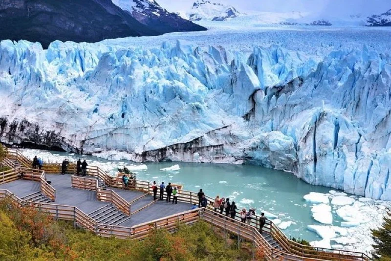
En el suroeste de Santa Cruz, a orillas del Lago Argentino, El Calafate es la puerta de entrada al Parque Nacional Los Glaciares y al Glaciar Perito Moreno — uno de los fenómenos naturales más impresionantes del planeta. Aquí el hielo no retrocede: avanza, cruje, colapsa. Y el viajero que lo ve, dice la leyenda, siempre vuelve.
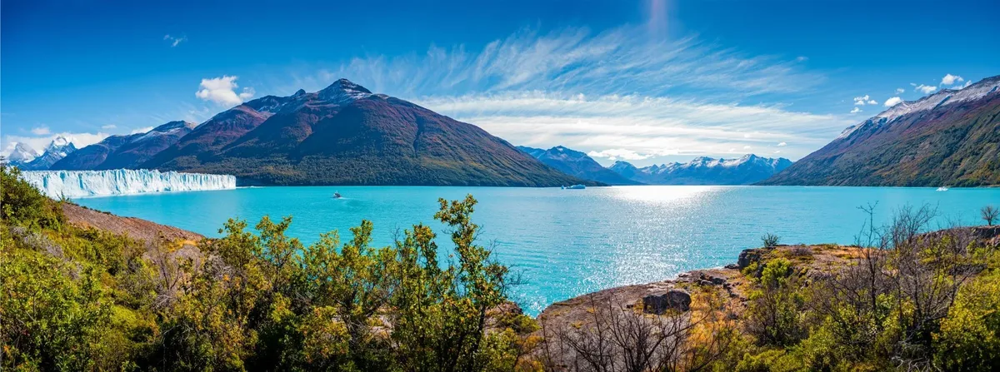
El Lago Argentino con los arbustos de calafate en primer plano y la pared azul del glaciar al fondo. La imagen que le da nombre a todo.
El nombre viene de una baya. El calafate (Berberis heterophylla) es un arbusto espinoso que crece en la estepa patagónica entre los 40° y 55° de latitud sur. Sus frutos son pequeños, azul-violáceos, ligeramente amargos y muy aromáticos. Las comunidades aonikenk —los tehuelches del sur— lo recolectaban y consumían desde tiempos inmemoriales, tanto frescos como fermentados en chicha. Cazadores nómadas de guanaco, conocían bien cada rincón de esta estepa mucho antes de que llegara cualquier europeo. Existe una leyenda que tiene mucho de verdad biológica: "quien come calafate, vuelve siempre a la Patagonia". Los pájaros que comen las bayas transportan las semillas, las depositan en otros territorios y regresan. El viajero humano, dicen, no es tan diferente.
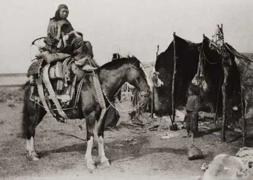
Los aonikenk —tehuelches del sur— recorrieron esta estepa durante milenios antes de la llegada de los europeos. Fotografía histórica, fines del siglo XIX.
Francisco Pascasio Moreno fue el hombre que abrió la Patagonia al mapa — y no debe confundirse con el glaciar que lleva su nombre. Naturalista y explorador autodidacta porteño, llegó al sur por primera vez a los 24 años. En 1877 navegó el Río Negro en canoa. En 1879 fue el primer hombre de ciencia en recorrer el Lago Argentino en una pequeña embarcación de madera, llegando hasta los brazos donde hoy flotan los témpanos desprendidos de los glaciares. Recibió el título de "Perito" — experto — porque representó a la Argentina en el arbitraje de límites con Chile de 1902, el proceso que fijó la frontera patagónica tal como existe hoy. El Glaciar Perito Moreno lleva su nombre aunque, paradójicamente, Moreno nunca lo vio. Como reconocimiento por sus servicios, el gobierno argentino le ofreció 25 leguas cuadradas de tierra patagónica. Las aceptó, y luego las donó al Estado. Esas tierras son hoy el núcleo del Parque Nacional Nahuel Huapi.
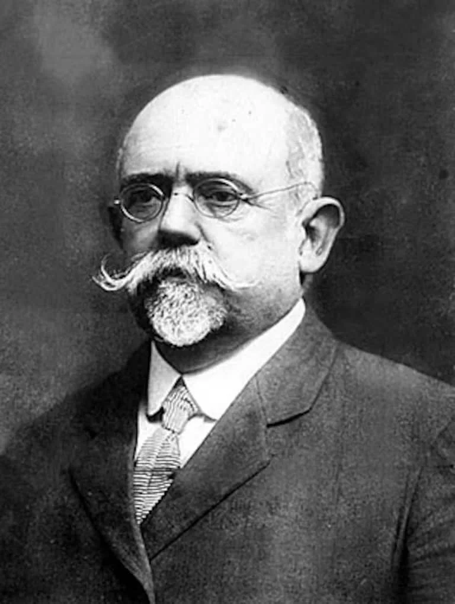
Francisco Pascasio Moreno
(1852–1919)
Moreno exploró el Lago Argentino en 1879 en una embarcación de madera. El glaciar que hoy lleva su nombre fue bautizado así en su honor — aunque él nunca llegó a verlo. Por sus aportes al país, le ofrecieron tierras en la Patagonia: las aceptó y luego las donó al Estado para crear el Parque Nacional Nahuel Huapi. Un gesto que define bien quién era este hombre.
El pueblo tardó décadas en crecer. A principios del siglo XX, el área era una región de estancias ovinas. Los primeros pobladores llegaron a orillas del Lago Argentino entre 1900 y 1910, atraídos por las tierras fiscales. El pueblo tomó forma alrededor de 1927, con una comisaría, una escuela y un almacén de ramos generales. Por décadas fue apenas un punto en el mapa. Todo cambió en 1937, cuando el presidente Agustín Justo firmó el decreto que creó el Parque Nacional Los Glaciares: 726.927 hectáreas de hielo, bosque nativo y montaña declaradas reserva natural. Las primeras pasarelas frente al glaciar se construyeron en los años 80. El aeropuerto actual, que hoy recibe vuelos de Buenos Aires en poco más de tres horas, abrió en el año 2000. Hoy El Calafate tiene más de 25.000 habitantes permanentes y cerca de 800.000 visitantes por año.
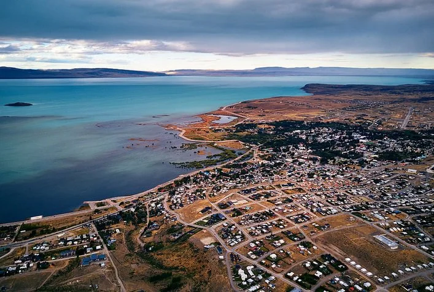
El Calafate desde el aire: el pueblo se extiende sobre la estepa entre la Ruta 40 y el Lago Argentino. En el horizonte, la cordillera donde nacen los glaciares.
Días larguísimos — en enero el sol no cae hasta las 22:30. Mayor frecuencia de vuelos y excursiones. Más turistas y precios más altos. Reservar con anticipación, especialmente el mini-trekking.
Precios accesibles, casi sin gente y la posibilidad de ver el glaciar con nieve fresca sobre el hielo azul. Algunos servicios reducen su oferta. El glaciar siempre está — nunca cierra.
El punto dulce: menos turistas que en verano, casi todos los servicios activos y precios intermedios. El Lago Argentino empieza a mostrar sus tonos más vibrantes al salir del invierno.
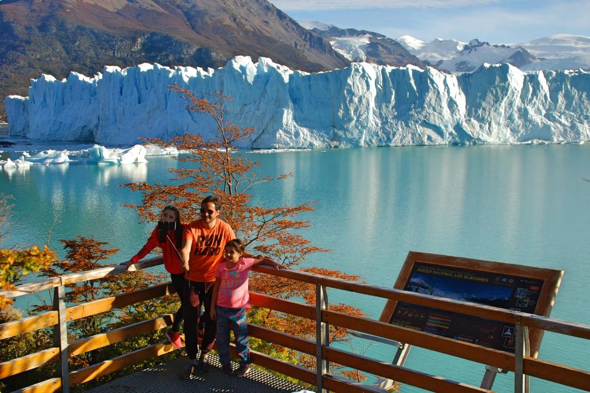
En otoño (marzo–mayo) bajan los turistas y sube el color: las lengas se incendian en rojo con el glaciar de fondo. La temporada menos conocida y más bonita.
El Aeropuerto Internacional Comandante Armando Tola (FTE) está a 23 km del centro. Vuelos directos desde Buenos Aires (Aeroparque y Ezeiza, ~3h 15min), Bariloche y Ushuaia. Operan Aerolíneas Argentinas y LADE. Transfer compartido desde el aeropuerto: entre USD 8 y 12 por persona.
Desde Río Gallegos: 320 km por Ruta Nacional 40 (3 horas). Desde El Chaltén: 230 km por Rutas 40 y 23 (2h 15min). Desde Puerto Natales, Chile: 340 km incluyendo cruce fronterizo (3h 30min). Todo el recorrido es pavimentado.
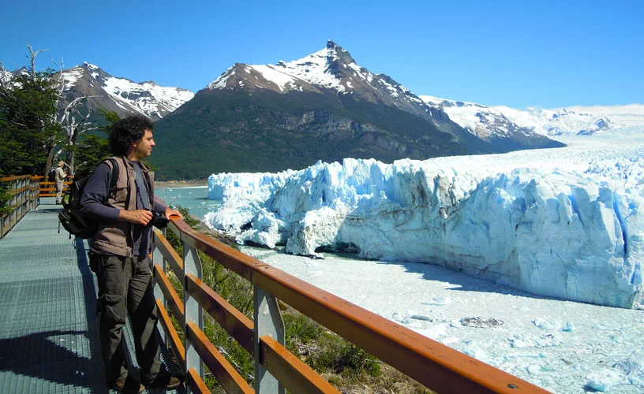
A 80 km del centro, dentro del Parque Nacional Los Glaciares. El glaciar tiene 5 km de frente, 30 km de longitud y hasta 60 metros de altura sobre el lago. Es uno de los pocos glaciares del mundo que no retrocede: avanza entre 1 y 2 metros por día y pierde masa por el frente en equilibrio dinámico. Los desprendimientos — bloques del tamaño de edificios cayendo al lago con estruendo — son constantes. Las pasarelas permiten verlo desde distintas alturas y perspectivas. Reservar al menos 3 horas. La luz de la mañana sobre el hielo azul es infinitamente mejor que la del mediodía.
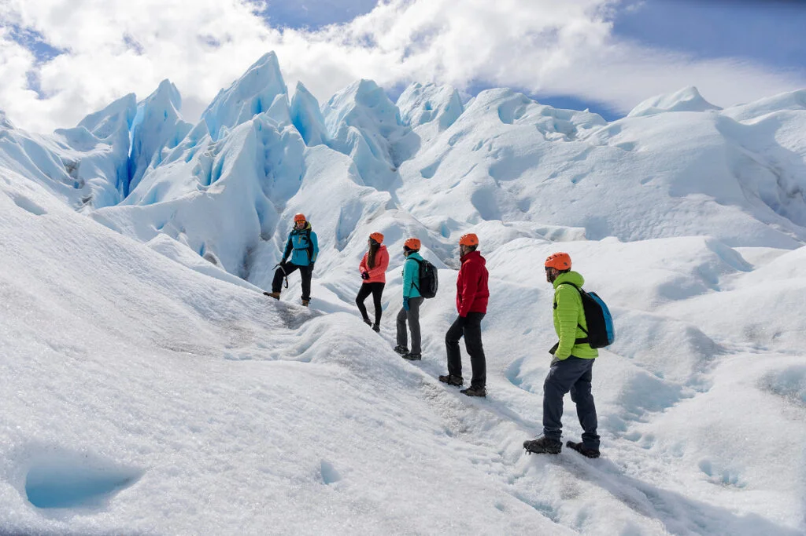
La experiencia más intensa que ofrece El Calafate. Se cruza en bote al lado sur del glaciar, se calzan crampones y se camina aproximadamente 90 minutos sobre el hielo. Pararse sobre el glaciar, escuchar los crujidos internos y ver de cerca las grietas y cuevas de hielo azul no tiene equivalente. El esfuerzo físico es moderado — apto para la mayoría sin entrenamiento especial. Se contrata exclusivamente con agencias habilitadas; la más conocida es Hielo y Aventura.
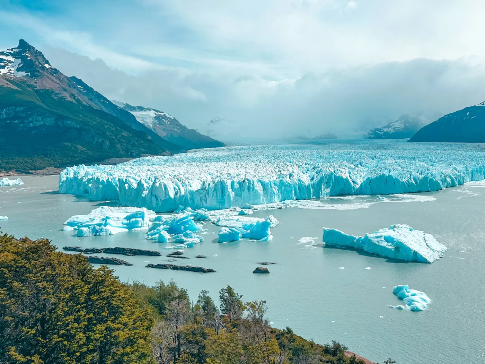
Esta excursión navega por los brazos norte y sur del Lago Argentino, pasando frente al Glaciar Upsala — mucho más grande que el Perito Moreno pero en retroceso acelerado — y al Glaciar Spegazzini, el más alto del parque con 135 metros de frente vertical. El recorrido dura unas 8 horas e incluye almuerzo a bordo. Es la única manera de ver estos glaciares y el paisaje de icebergs flotantes que generan. Sale desde el Puerto Bajo de Las Sombras, a 50 km del centro por ruta.
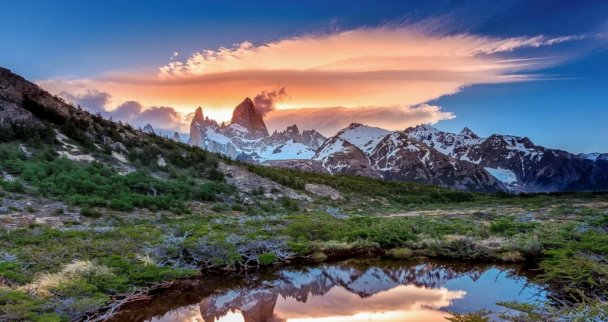
A 230 km por la Ruta 40, El Chaltén es la capital del trekking patagónico y el pueblo más joven de Argentina (fundado en 1985). El Fitz Roy y el Cerro Torre son dos de las cumbres más fotográficas del planeta. Las agencias de El Calafate ofrecen excursiones de día completo con salida a las 7 AM —el tiempo alcanza para hacer el sendero al Mirador del Fitz Roy. Si podés quedarte a dormir en El Chaltén, mucho mejor.
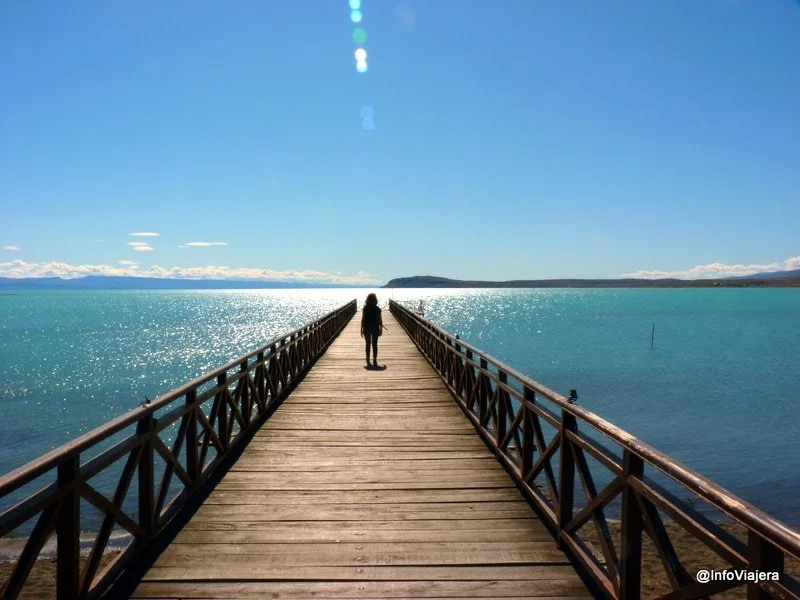
Reserva natural a 15 minutos a pie del centro, a orillas del Lago Argentino. Tiene una pasarela de madera y es uno de los mejores lugares de avistaje de flamencos rosados de la Patagonia — en temporada llegan a verse centenares. El paisaje combina el lago enorme, los flamencos y la cordillera nevada al fondo. Entrada económica, sin necesidad de guía. Ideal para la primera tarde de llegada, especialmente al atardecer cuando la luz es dorada y los flamencos forman bandadas sobre el agua.
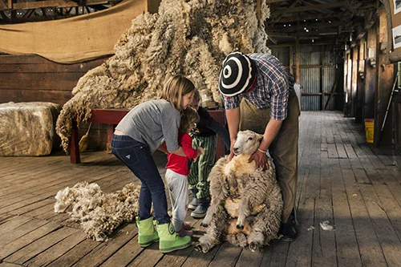
Para la última mañana antes del vuelo, una media jornada en una estancia es el cierre perfecto de viaje. La Estancia Alta Vista (33 km del centro) y la Estancia Nibepo Aike (57 km, dentro del Parque Nacional) ofrecen recorridos a caballo, avistaje de fauna patagónica, esquila de ovejas en temporada y almuerzo con cordero asado al palo. La esquila es uno de los rituales más antiguos de la Patagonia ganadera — un gaucho experto puede esquilar una oveja entera en menos de dos minutos. No hace falta reservar con mucha anticipación fuera de la temporada alta.
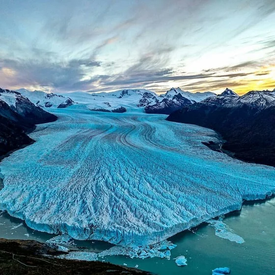
El Glaciar Perito Moreno desde el aire al atardecer: 30 km de hielo avanzando hacia el lago desde las alturas de la cordillera andina.
La parrilla de referencia histórica del pueblo. Cordero a la estaca y costillar patagónico, cocción lenta a las brasas. Ambiente familiar, porciones generosas. Reserva obligatoria en temporada alta.
El restaurante más completo del centro. Trucha del Lago Argentino, cordero braseado, empanadas de calafate. Carta de vinos patagónicos bien seleccionada. Una opción sólida para cualquier noche.
Opción informal y económica. Pastas caseras, minutas y cordero en preparaciones sencillas. La mejor relación precio-calidad para almuerzos rápidos entre excursiones.
La opción más fresca: ensaladas grandes, wraps, platos vegetarianos y jugos naturales. Para descansar de la carne después de tres días de cordero y trucha.
Sándwiches y crepas dulces y saladas. Ideal para desayuno o merienda después del glaciar. Ambiente relajado, café de calidad y el mejor lugar para planear el día.
El bar más mítico. Decoración de expedición antártica, gran selección de whiskies y la mejor vista del lago desde cualquier bar del pueblo. Para cerrar la noche con estilo polar.
Barras de roble y hasta doce canillas rotativas con cervezas propias. Las mejores opciones son la Negra y la Stout de temporada. También sirven pizzas de masa gruesa y picadas patagónicas ideales para compartir después del trekking.